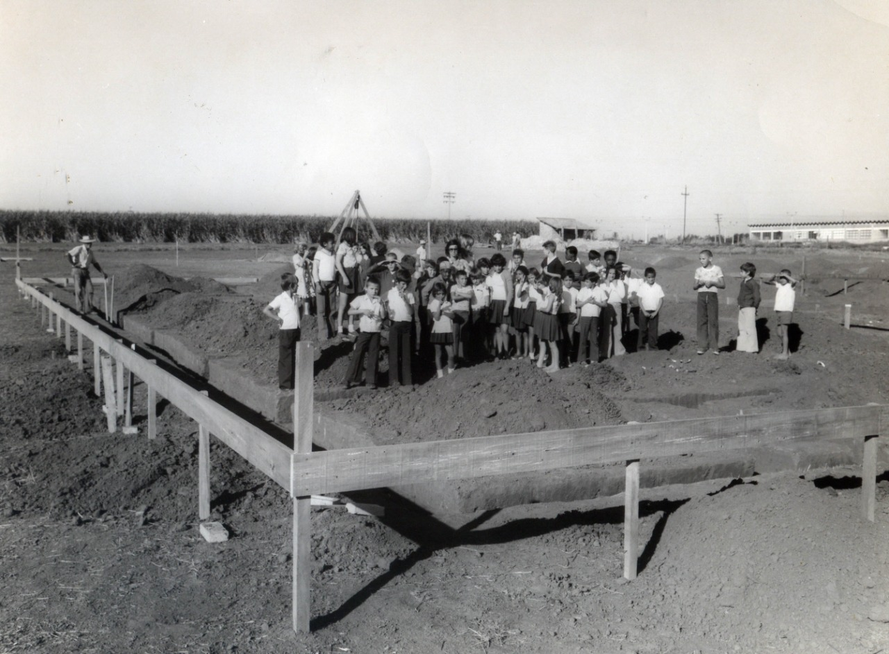

SOBRE A ASSOCIAÇÃO
Em mais de 50 anos de existência, A APAE (Associação de Pais e Amigos dos Excepcionais) de Limeira estima ter prestado atendimento integral a cerca de 7.500 pessoas com algum tipo de deficiência. São usuários que deixaram a instituição depois de completarem ciclos que incluem avaliações, sessões terapêuticas, formação educacional, capacitação para o trabalho e outras formas de assistência especializada, direcionadas à melhoria de qualidade de vida e as mais diferentes formas de inclusão na sociedade.
Possui atendimento médico, terapêutico, educacional, e profissionalizante e através de seus programas, Centro de Apoio Diagnóstico (CAD), Centro de Atenção Terapêutica (CAT), Centro de Ações Preventivas (CAP), Escola de Educação Especial “João Ometto” e Centro Profissionalizante e de Convivência (CPC), atende crianças com atraso no desenvolvimento neuropsicomotor (ADNPM) e pessoas com deficiência intelectual leve e moderada (DM).
Atuando com princípios preventivos e inclusivos, possui 120 profissionais que compõem equipes interdisciplinares, fazendo parte da rede de proteção social que é mantida através de recursos próprios, dos setores públicos e privado e do auxílio da comunidade, atendendo cerca de 600 pessoas mensalmente.
Como organização social sem fins lucrativos, a Apae de Limeira também enfrenta desafios para sua manutenção. Do total das despesas mensais, 29,34% são cobertos pelos recebíveis de convênios com os governos municipal, estadual e federal. Fica como tarefa da entidade, buscar os demais recursos, 70,66%, para completar as receitas.
Assim, por meio da quebra de paradigmas, da soma de tecnologia e experiência, da promoção e inclusão, a APAE de Limeira se orgulha em poder fazer parte de um ciclo, que muitas vezes, começa ainda nos primeiros meses de vida e por meio de atendimento médico, psicológico, educacional e profissional vê o avanço de seus usuários exercendo todos os seus direitos e deveres como cidadãos.
Como tudo começou…

Na década de 60 muitos pais de crianças deficientes intelectuais buscavam atenção educacional em cidades vizinhas, como Piracicaba, ou então, em uma das salas de aula voltadas para esse público-alvo, que funcionavam no antigo Grupo Brasil.
Foram esses pais que deram início às articulações e começaram os primeiros contatos junto ao governo do estado e passaram a saber mais sobre o projeto recém-criado pela Apae.
Reuniões permanentes aconteciam, na maioria das vezes, na casa daquela que viria ser a sua primeira presidente: a Sra Olga Forster. A oficialização e assinatura da primeira ata da diretoria da Apae Limeira aconteceu no Ítalo-Brasileiro, em 27 de junho de 1966.
Os anos seguintes à oficialização foram difíceis e de muita luta, diante da escassez de recursos. Até 1973, eram feitas reuniões periódicas da diretoria e a arrecadação se baseava na doação de dinheiro dos 216 associados e uma ajuda do Estado.
Foi aí que um TCC (Trabalho de Conclusão de Curso) de quatro estudantes da Faculdade de Serviço Social de Piracicaba (Helena Apparecida Arcaro Conci, Marilda Miotto, Myrian Arcaro de Araújo e Sidneya Feres) mudaram a história ao conseguir a mobilização de vários setores da sociedade. Na época, conseguiram cadastrar 683 excepcionais necessitados de assistência especializada. O movimento liderado por elas tomou corpo e contagiou lideranças e empresários da época como o usineiro Luiz Ometto, que em 23 de novembro de 1973, fez a doação de um terreno com área de 13.600 metros quadrados.
Os anos seguintes foram de muita luta e união de voluntários. Até a mudança definitiva para uma sede própria, a Apae de Limeira funcionou em dois endereços: em um imóvel na Avenida Araras, número 66 e em outra casa, cedida pela família Galzerano e situada na Rua 22 de Julho, na Cidade Jardim.
A mudança para a sede própria aconteceu em 25 de agosto de 1979, no Parque Nossa Senhora das Dores, onde funciona a APAE até os dias atuais.